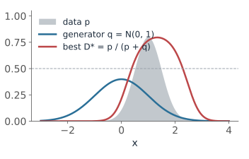
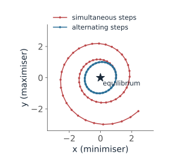
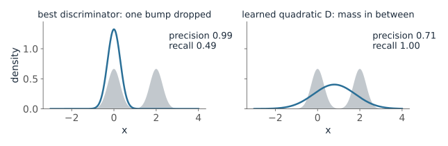
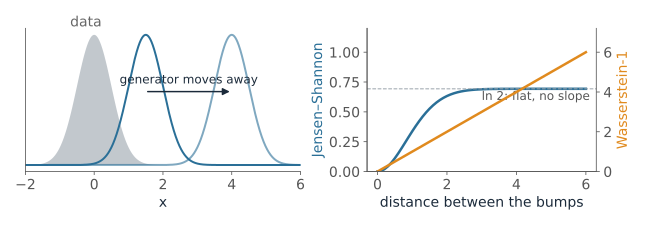
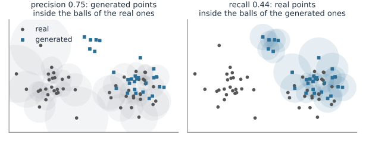

The theory says the GAN game ends with generated data distributed like the real data. Why does it so often end somewhere else, and how would you notice?
Mode collapse: all samples become (nearly) the same. Oscillation: the two players circle instead of settling.
Mode dropping and vanishing gradients; the Wasserstein idea in one picture.
Judging generated samples: precision (are they realistic?) and recall (is all the variety there?).
Slides titled The math give the formulas and proofs; the ideas are complete without them.
The discriminator learns too slowly (learning rate 0.05, one step). The generator overshoots and then squeezes all its samples onto one point: a = 0.02 at step 500.
Every sample looks real (precision 1.00), but the variety is gone (recall 0.06).
Try it: collapse and overshoot
Why the generator collapses
Each generator step answers the current discriminator.
If D were frozen, the best generator would put every sample at the single x where D(x) is highest. Nothing in the generator’s loss rewards variety.
A good discriminator notices the pile-up (too many fakes at one x: D drops there) and pushes the samples apart again. A slow or weak one does not.
On images: the generator makes the same few faces, cells or textures, whatever the noise.

The math: a frozen discriminator invites collapse
The generator minimises \mathbb E_z[-\log D(G(z))] for the current D.
For each z separately, the best G(z) is any maximiser x^\star of D. So the best generator for a fixed D is the point mass at x^\star: zero variety.
Variety only comes from the game: once q piles up at x^\star, the best discriminator D^* = p/(p + q) falls there.
With alternating gradient steps the generator follows D’s slope beforeD has adapted. Discriminator learning rate and number of steps decide whether D keeps up (demo: D rate 0.05 with one step collapses; 0.5 with five steps does not).
The game rotates
Gradient descent finds minima. A game is different: one player wants down, the other up.
The simplest game: x minimises x\cdot y, y maximises it. The equilibrium is (0, 0).
Simultaneous gradient steps spiral outwards (radius × 3.2 after 60 steps with step 0.2); alternating steps circle for ever.
GAN training has the same rotation near its equilibrium: the generator overshoots (a = 0.66 in the demo’s “generator too fast”), the discriminator follows, and so on.

The math: why the steps spiral
For f(x, y) = xy, the gradients are \partial f/\partial x = y and \partial f/\partial y = x.
Simultaneous steps: x \leftarrow x - \eta y, y \leftarrow y + \eta x, i.e. multiplication by \begin{pmatrix}1 & -\eta\\ \eta & 1\end{pmatrix}, a rotation scaled by \sqrt{1 + \eta^2} > 1: an outward spiral, for every \eta.
Alternating steps: the matrix \begin{pmatrix}1 & -\eta\\ \eta & 1 - \eta^2\end{pmatrix} has determinant 1 and eigenvalues on the unit circle (for \eta < 2): the iterates circle, neither converging nor diverging.
The “gradient field” of a game has a rotational part. Remedies damp it: smaller steps, averaging the weights over time, or extra terms (e.g. penalising the discriminator’s gradient).
Too simple a generator: dropping or blurring modes

A line generator can only make one bump. With the best discriminator (left) it chooses one of the two data bumps: realistic, half the variety missing (mode dropping).
With the learned quadratic discriminator (right) it spreads over both, with samples between the bumps that no real data have.
Vanishing gradients
At the start, real and generated images barely overlap.
Then the Jensen–Shannon divergence, which the game minimises, is stuck at its maximum \ln 2: moving the generator closer does not change it (right, blue). No slope, nothing to follow.
A discriminator that is too good gives the generator saturated, uninformative gradients.
The non-saturating loss of the last unit helps; the Wasserstein idea goes further.

The Wasserstein idea
Earth mover’s distance: how much mass must be moved how far to turn the generated distribution into the data. Two bumps 4 apart: distance 4; 6 apart: 6. It keeps growing (right, orange), so it always has a slope.
The critic replaces the discriminator: a score f(x), high on real and low on generated data, whose slope is limited (|\text{slope}| \le 1). The difference of mean scores is then the earth mover’s distance (Arjovsky et al., 2017).
In practice the slope limit is a penalty on (\|\nabla_x f\| - 1)^2 at points between real and generated samples (Gulrajani et al., 2017), or a normalisation of the critic’s weights (spectral normalisation).
Much steadier training; the critic’s estimate of the distance also falls as the samples improve, unlike GAN losses.
Left: the cheapest transport plan\gamma (a joint distribution with marginals p and q). In 1D: sort both samples and pair them by rank: W_1 = \text{mean}|x_{(i)} - y_{(i)}| (the coding exercise).
Right (Kantorovich–Rubinstein duality): the best 1-Lipschitz criticf. A WGAN trains f to maximise the difference and the generator to minimise it.
For p = \mathcal N(\mu, \sigma^2), q = \mathcal N(\mu + d, \sigma^2): W_1 = |d|, while \mathrm{JS} \to \ln 2 as |d| grows.
Judging generated samples: realism and variety
The GAN losses are no progress bar. Judge the samples, against held-out real images (in a feature space for images):
Precision: the share of generated samples that lie where real data lie (realism).
Recall: the share of real data that have generated samples nearby (variety, coverage).
“Nearby”: inside a ball reaching each point’s k-th nearest neighbour of its own set.

The math: precision and recall of samples
Real samples R, generated samples G; r_k(\mathbf u) = distance from \mathbf u to its k-th nearest neighbour in its own set (Kynkäänniemi et al., 2019):
For images the points are features of a pretrained network, not pixels; small k (3–5).
Precision and recall as pseudocode
for every real point r: rad_R[r] = distance to its k-th nearest other real point
for every generated point g: rad_G[g] = distance to its k-th nearest other generated point
precision = share of generated g with |g − r| ≤ rad_R[r] for some real r
recall = share of real r with |r − g| ≤ rad_G[g] for some generated g
Balance the players: a faster discriminator (more steps, or a larger learning rate than the generator’s), Adam with small momentum.
Limit the discriminator’s slope: a Wasserstein critic with a gradient penalty, or spectral normalisation. Smooth critics give useful gradients far from the data.
Let the discriminator see variety: features computed over the whole batch (e.g. the spread of the samples), so a collapsed batch is easy to spot.
Average the generator’s weights over the last steps (damps the rotation).
And always: look at many samples, compute precision and recall on held-out data, and check for memorised training images (the distance to the nearest training image; see the diffusion-models day).
Summary
Problem
What you see
Why
Help
Mode collapse
same output for every z; recall drops
G answers a frozen D with a point
faster or smoother D, batch features
Oscillation
samples keep changing, no convergence
games rotate around the equilibrium
smaller steps, weight averaging
Mode dropping
realistic but parts of the data missing
the game prefers realism to coverage
stronger generator, check recall
Vanishing gradients
generator does not move
JS is flat when distributions do not overlap
non-saturating loss, Wasserstein critic
Judge samples by precision (realism) and recall (variety), never by the GAN losses. Next: translating images, where a realistic sample can be the wrong answer.